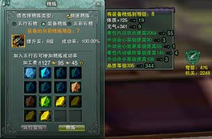
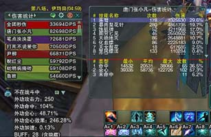
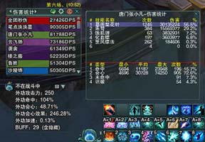
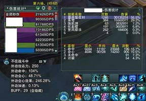
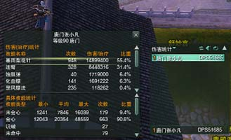

add netbeans
add vsCode
test
   
这是我第一次写一个网页，然后我要链接到每天一下。千里之行始于足下
每天一with target _blank下 target好像不符合strict标准
每天一下with target coffee
据说这是一个块引用，可是它到底有什么用呢？
到底有什么用呢？到底有什么用呢？
是可以换行吗？不是，好像是可以在开始空两行？
让我再把文字弄得长一点试试，还要多长呢？还要多长呢？还有多长shiyishi
呢？随便乱大一点吧。感觉到你就开始尽可能地数据库内进口件案件可能今年四季度那就看你
然后我会放一个列表，你看看是有序的还是无序的，顺便再试一下<html>以及&哈哈哈
再让我试一试
好像还有一个叫自定义列表的东西，需要dl，dt，dd

这将是我第二天写网页